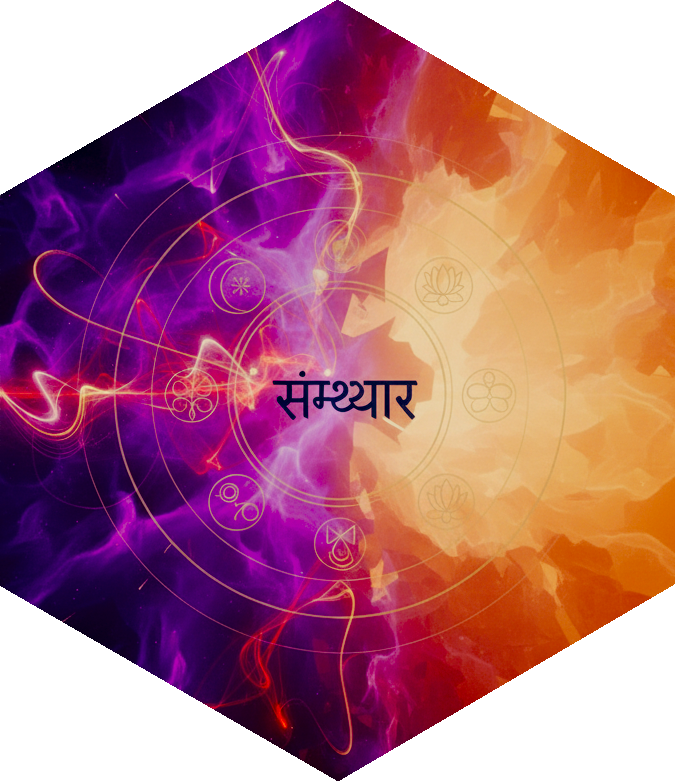

Evolve the ten organs of knowledge and action
Source:R/samkhya_evolution.R
evolution_indriyas.RdManifests the five jnanendriyas and the five karmendriyas, which with manas complete the elevenfold set issuing from the sattvic aspect of ahamkara (Samkhya-Karika 25-26).
Usage
evolution_indriyas(
state,
which = c("both", "jnanendriya", "karmendriya"),
verbose = TRUE
)Details
Samkhya-Karika 26 names the organs of knowledge as eye, ear, nose, tongue and skin, and the organs of action as speech, hand, foot, anus and generative organ. This package lists the organs of knowledge in the order ear, skin, eye, tongue, nose, which is the order that aligns each organ with its corresponding subtle and gross element; the karika's own order differs, and the divergence is one of presentation, not of doctrine. One ordering is used throughout the package so that the tables, the diagrams and the vignettes cannot disagree.
Both classes are sattvic in origin. The assignment of the organs of action to a tamasic or rajasic branch, which is common in secondary diagrams, contradicts SK 25: it is the tanmatras, not the organs of action, that issue from the tamasic aspect.
Samkhya-Karika 28 gives the function of the five organs of knowledge as alocanamatra, bare apprehension without construction; determination is the work of buddhi, appropriation of ahamkara, and construction of manas. The same verse gives the five actions as speech, grasping, movement, excretion and pleasure. This division of labour, and not a theory of the senses as judging faculties, is what distinguishes the Samkhya account of perception.
See also
evolution_manas() for the eleventh member of the set,
evolution_ahamkara() for their material cause,
evolution_tanmatras() for the parallel branch, tattvas.
Examples
state <- init_prakriti() |>
evolution_buddhi(verbose = FALSE) |>
evolution_ahamkara(verbose = FALSE) |>
evolution_manas(verbose = FALSE) |>
evolution_indriyas(verbose = FALSE)
# The elevenfold set of SK 25 is complete.
summary(state)$branches
#> vaikrta bhutadi
#> 11 0
# Only the organs of knowledge, if the two classes are taken separately.
init_prakriti() |>
evolution_buddhi(verbose = FALSE) |>
evolution_ahamkara(verbose = FALSE) |>
evolution_indriyas(which = "jnanendriya", verbose = FALSE) |>
summary() |>
getElement("branches")
#> vaikrta bhutadi
#> 5 0